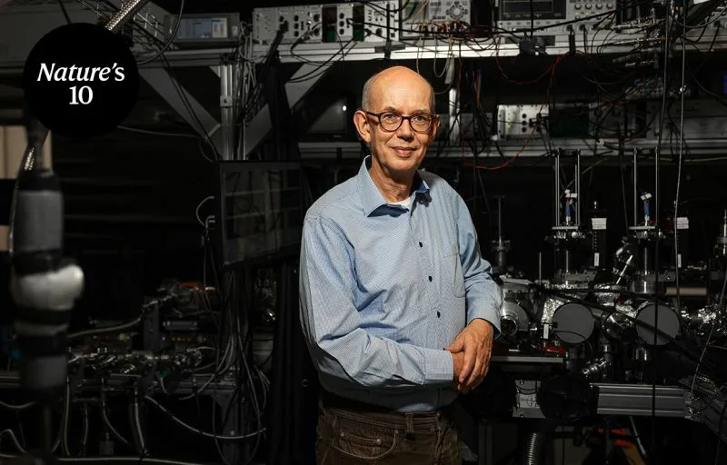
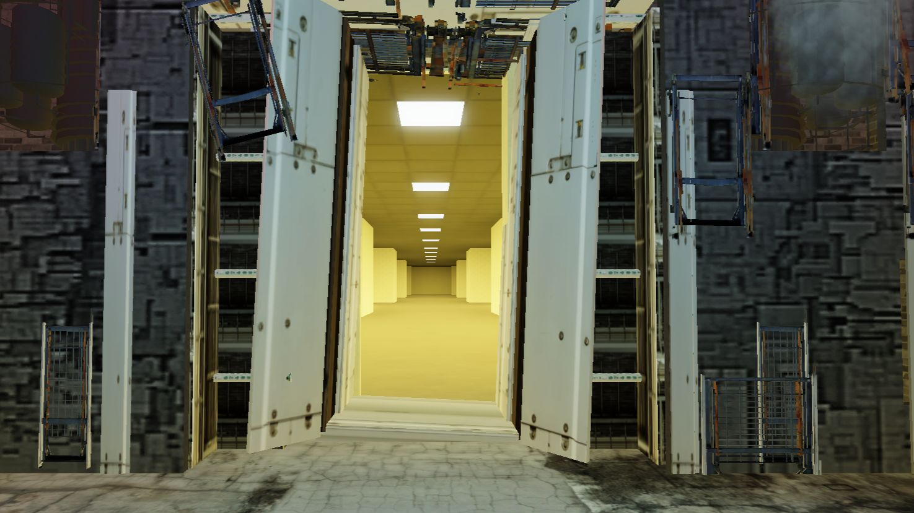
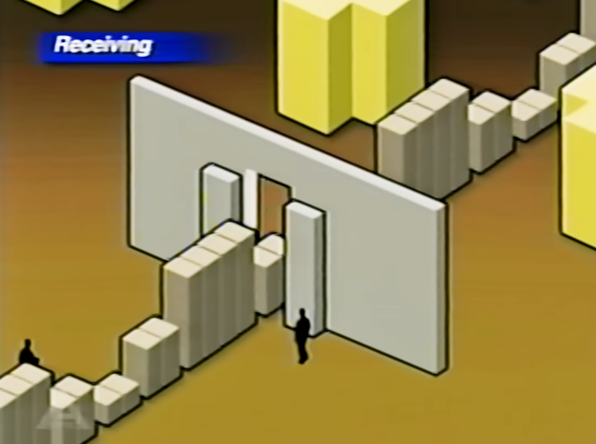
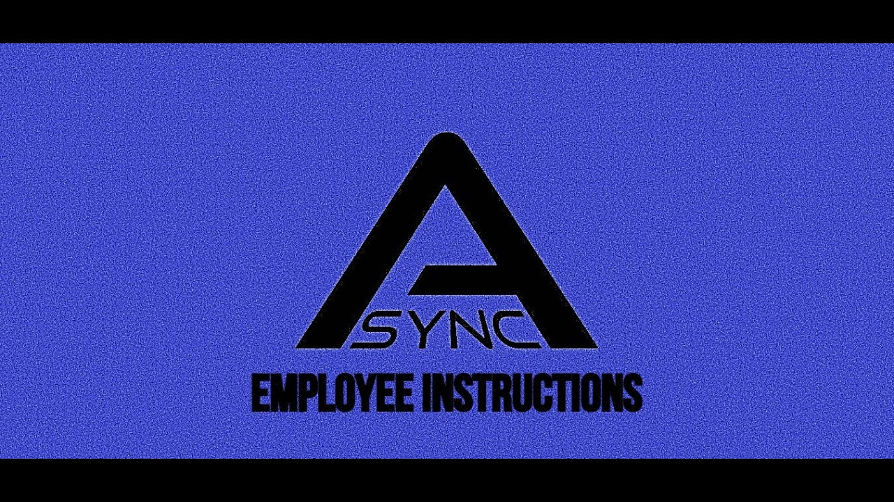
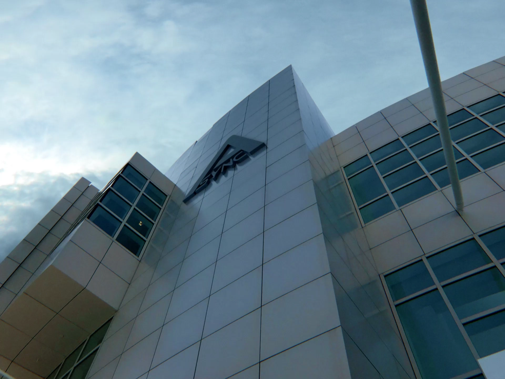

Research teams report a 40% reduction in dimensional drift during high-energy magnetic distortion tests, paving the way for safer navigation deeper into the complex.
Independent spatial research since 1983
Explore technologyOur research combines engineering, spatial science, and long-term field observation. Project KV31 is the institute's most ambitious program to date.

01 / Technology
The Low-Proximity Magnetic Distortion System creates a controlled access point into a previously unreachable spatial environment.
02 / The complex
The Low-Proximity Magnetic Distortion System creates a controlled access point into a previously unreachable spatial environment.

03 / Archive
Technical notes, mapping reports, field observations, and archived project records are maintained for internal research use.

Research teams report a 40% reduction in dimensional drift during high-energy magnetic distortion tests, paving the way for safer navigation deeper into the complex.

Updated safety guidelines and telemetry standards for all researchers operating beyond Threshold 3.

Overview of newly mapped non-Euclidean sectors and upcoming structural reinforcement schedules.
Routine maintenance for containment units.
Retrieved audio from the 1994 expedition.
Mandatory biometric credential updates.
Fixing minor bugs and issues.